離開聖米歇爾山之後，我原本以為那種「劍與杖」的世界感差不多該結束了。
結果下一站，聖馬洛，直接換了一套劇本。
如果聖米歇爾山像是修道院、天使與城堡疊在一起的 RPG 場景，那聖馬洛就是另一種版本：城牆、砲台、石板街、教堂尖塔，以及一段段聽起來很像海盜傳說的歷史。
只是我後來才真正弄清楚——這裡最有代表性的那些人，嚴格說來不是普通海盜。
有些城市的歷史寫在博物館裡；聖馬洛的歷史，好像直接穿著靴子、帶著劍，從城牆外走了進來。
這裡的全名，我終於弄清楚了
我們走進的是 Saint-Malo Intra-Muros，也就是聖馬洛「城牆之內」的老城。
這個名字很直白，也很準。
入口旁就是聖馬洛城堡；一進城，街道立刻縮窄，地面變成石板，兩側高高的花崗岩建築把天空切成長條。店面、餐館、紀念品店和住宅全混在一起，人就順著那些灰色石頭往裡走。
照片裡那種「一直走、一直逛」的味道，其實比單一地標更像我對聖馬洛的記憶。
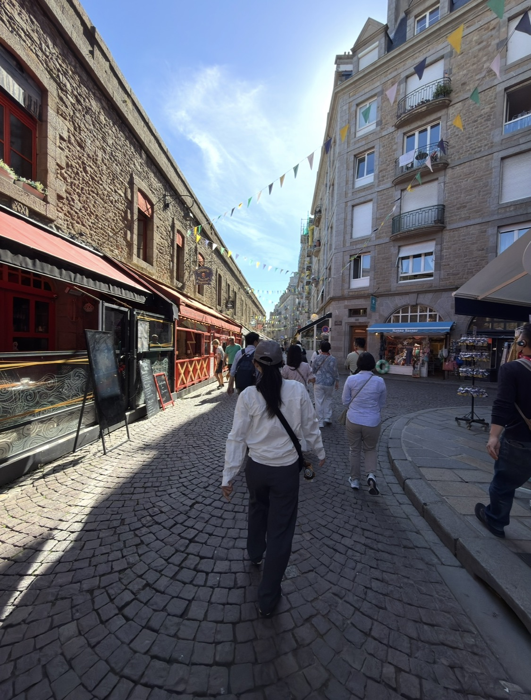
「海盜」？其實更準確的詞叫私掠者
旅途中領隊講了很多名字，我當時其實聽得有點亂：誰受國王授權？誰去搶英國的船？東印度公司又是哪一段？
回來重新整理之後，事情反而清楚很多。
Saint-Malo 的歷史身分之一，是 cité corsaire——私掠者之城。所謂 corsaire，和一般海盜最大的差別，就是他們在戰爭期間持有國家或君主授權，可以攻擊敵國商船、奪取船貨，再依規則處理戰利品。
所以「國王授權的海盜」是很好懂的說法，但真正比較準確的是：他們是有官方委任的私掠者。
領隊說的東印度公司，應該就是 Surcouf 與 Kent
聖馬洛最著名的私掠船長之一，是 Robert Surcouf。
1800 年，他指揮 La Confiance 在孟加拉灣奪下英國東印度公司的大型商船 Kent。這場戰鬥後來成為 Surcouf 最著名的事蹟之一，也讓他成為聖馬洛私掠者傳說裡幾乎無法跳過的人物。
另外一位更早的 René Duguay-Trouin，則在路易十四時代成為著名私掠船長，1711 年甚至攻下里約熱內盧。
所以我後來才把那天領隊散掉的關鍵字接起來：國王授權、英國、東印度公司、奪船——原來是在講這一整套「合法海上戰爭」的世界。
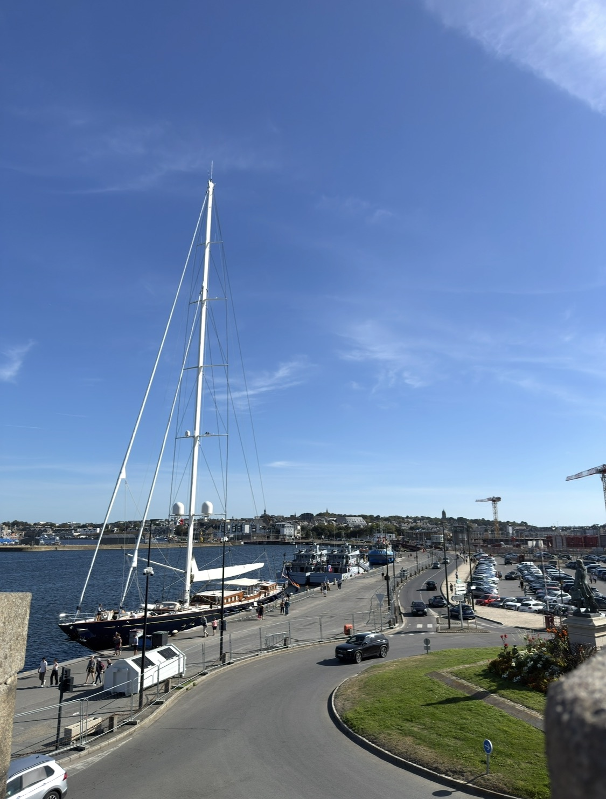
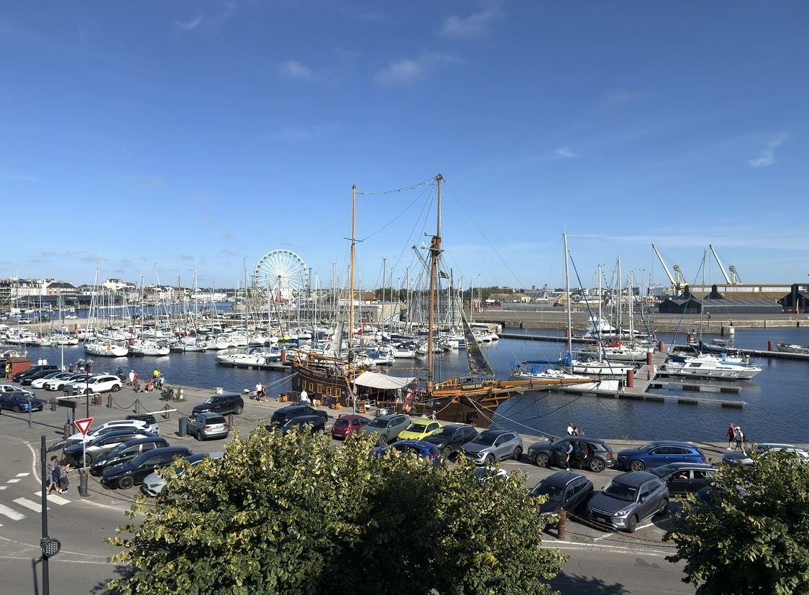
城牆外就是港口，故事沒有離海很遠
三張後來補上的照片，反而把這件事補得很完整。
從城牆往外看，高桅帆船、碼頭、現代遊艇和港區全攤在眼前。私掠者的故事因此不再只是牆上的歷史文字：這座城市的財富、戰爭、航海與冒險，本來就是從這片水面進出的。
沿著城牆繼續走，一邊是港口，一邊是老城街屋。那種「城與海只隔一道石牆」的關係，大概就是聖馬洛最有味道的地方之一。
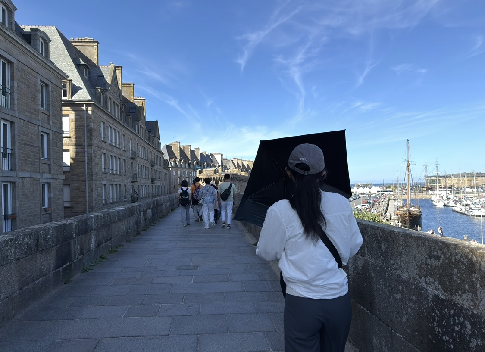
難怪又有那種「劍與杖」的動漫世界感
走在老城裡，我一直覺得前一天聖米歇爾山的世界觀還沒有完全退場。
只是這裡少了修道院的神秘感，多了港口城市的粗獷。
城堡、厚牆、狹窄石街、鐵製招牌、教堂尖塔，再加上「私掠者」「砲台」「奪船」這些背景設定，很容易讓腦袋自動補上披風、長劍、火槍與帆船。
奇幻作品常把中世紀歐洲拆成一套視覺符號；而在聖馬洛，很多符號根本不用補，它們本來就在街上。
但眼前這座老城，並不是毫髮無傷地從幾百年前留下來
這也是我回來查資料後才覺得很值得補上的一件事。
1944 年的解放戰役重創聖馬洛，城牆內老城約有八成被摧毀。今天看到的 Intra-Muros，是戰後依歷史尺度與城市樣貌慎重重建的結果。
知道這件事之後，再看照片裡那些整齊卻仍然很有老城味道的花崗岩立面，感覺完全不同。
它不是一條為觀光新造的「仿古街」。更像是一座城市被打碎以後，決定把自己的樣子重新一塊一塊拼回來。
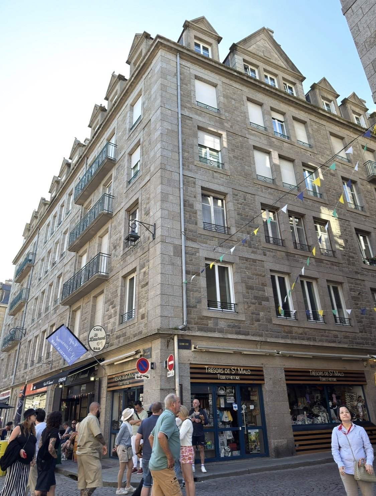
假日的老城，有人潮，也有不少拉下來的鐵門
那天正逢假日。
街上人很多，彩色小旗掛在上方，餐館與紀念品店前一批又一批遊客經過；但另一方面，也有不少店家沒有開。
這反而讓逛街的節奏沒有那麼緊。
開著的就進去看看，沒開的就繼續走。右邊可能是紀念品店，左邊是餐館，再往前一個街口，教堂尖塔就突然從建築縫裡露出來。
我很喜歡照片裡這種感覺：沒有很強烈的「下一個景點」，就是跟著街道走。
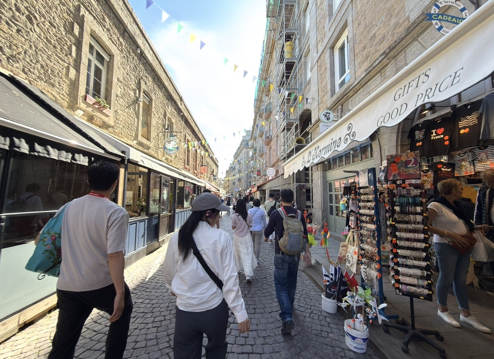
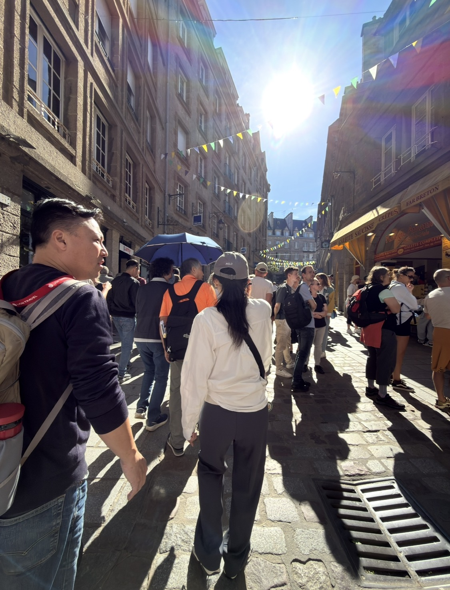
街道盡頭，是 Saint-Vincent 主教座堂
在 Intra-Muros 裡很難完全忽略 Saint-Vincent-de-Saragosse 主教座堂。
它從 12 世紀開始發展，建築前後延續了數百年，因此同時能看到羅馬式與哥德式語彙。1944 年它也受到嚴重破壞，之後經歷長時間修復。
照片裡我很喜歡那種「先在街道遠處看到尖塔，然後慢慢走到教堂面前」的過程。
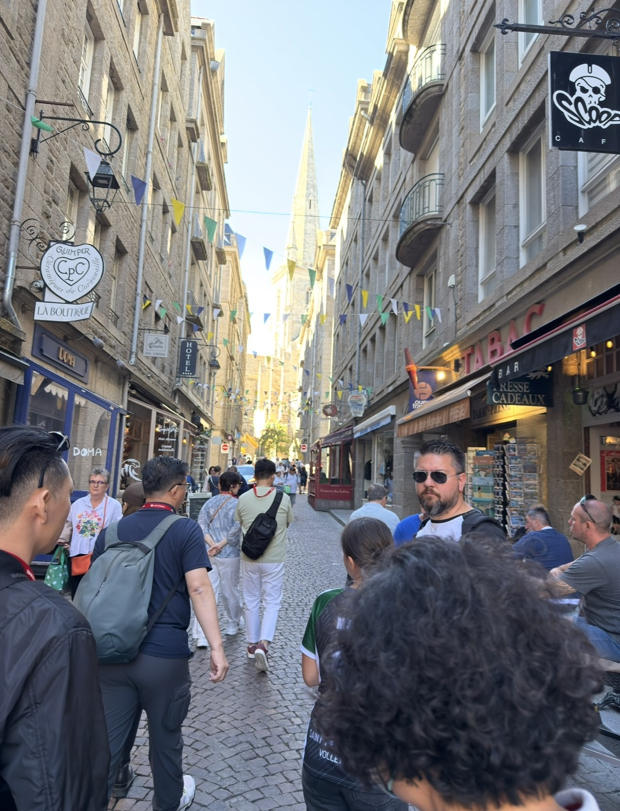
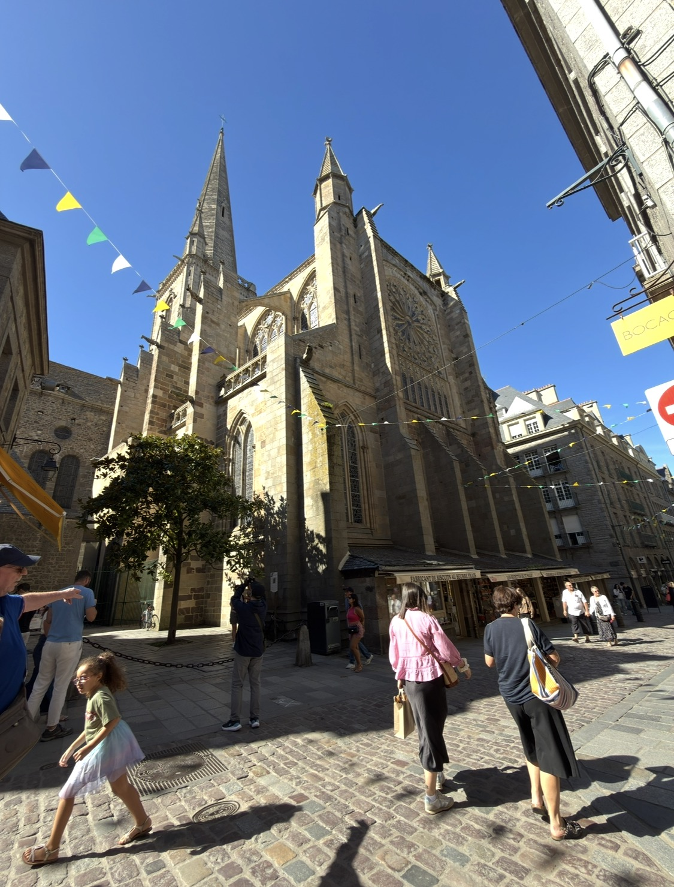
外面是人潮、商店與石板路；走進去之後，聲音突然被厚牆切掉。視線往上，拱頂、玫瑰窗、彩色玻璃與管風琴一下子把街上的節奏全部換掉。
更有意思的是，教堂裡還安葬著航海家 Jacques Cartier，以及那位私掠船長 René Duguay-Trouin。
於是整座城市的海洋史，甚至一路走進了教堂裡。
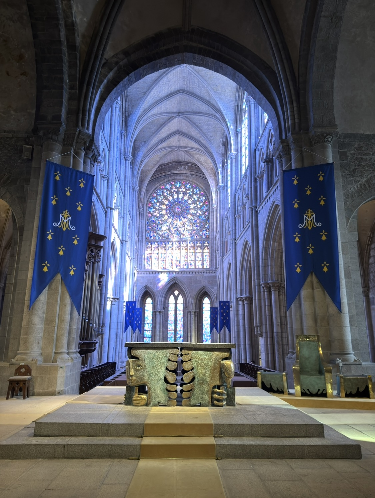
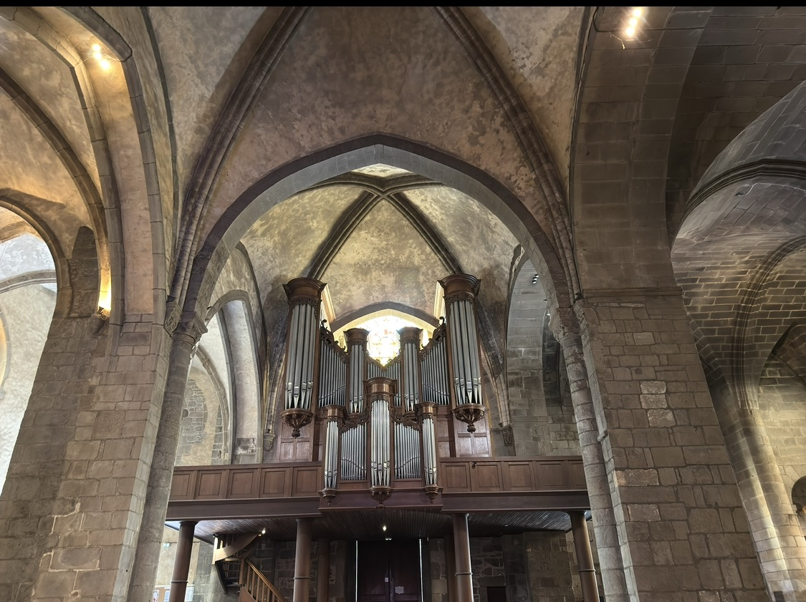
海鷗的伏筆，在這裡終於收回來
象鼻海岸時，我第一次開始覺得海鷗有點可愛。
到了聖米歇爾山，那份好感又多了一點。
來到聖馬洛，牠們不再只是站在地上讓我拍照，而是在屋頂與城牆上空叫著、盤旋。你不一定一直看得到牠們，卻一直聽得到牠們在。
那時我也慢慢意識到：接下來的行程要離開這一段海岸線了。下一站，也許就不會再有這麼多海鷗。
所以，那隻最後跟著我回台灣的海鷗娃娃，就是在聖馬洛買的。
而且一路比較下來，這裡居然還是我看到最便宜的。
這樣回頭看，購買它並不是某一秒突然的衝動。象鼻海岸先讓我多看了幾眼，聖米歇爾山又把好感往前推，到聖馬洛，故事剛好有了一個可以帶走的實體。
這一站終於有時間，不必一直被集合時間追著跑
和象鼻海岸那種必須搶時間往上走不同，聖馬洛留給我們的自由活動時間比較從容。
我可以真的在街上亂走，可以停下來看店，也有足夠時間拿手機問 ChatGPT：附近有沒有值得坐一下的咖啡館？
後來，我真的找到地方坐了下來。
那杯咖啡，我後來真的另外留了一篇。
因為「在私掠者之城裡找一間咖啡館，終於悠哉坐下來」這件事，本身就值得有自己的節奏。
閱讀咖啡館篇：一杯 Café allongé，和一句「在地語言」 →
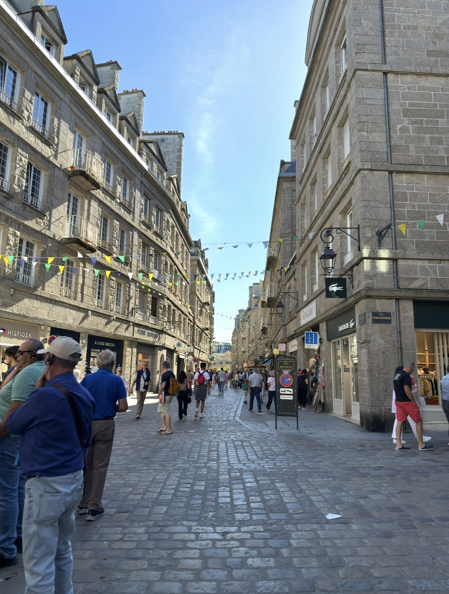
回頭想，聖馬洛最好玩的不是哪一個景點
照片整理到這裡，我反而覺得聖馬洛不是那種靠單一地標成立的地方。
它好玩的地方，是你一直在走。
從城堡旁進去，穿過石板街，看店、看人、看招牌，遠處露出教堂尖塔；再走近主教座堂，進去看彩窗與管風琴；走出來，又回到餐館、紀念品店和人潮。
城市沒有突然切成「古蹟區」和「生活區」。那些東西都混在一起。
也因此，那種劍與杖的世界感最後沒有停在幻想。
它旁邊就是一間還在營業的店、一群正在逛街的人，還有天空裡一直叫的海鷗。
聖米歇爾山讓我知道，天使可以帶著劍。
聖馬洛則讓我知道，所謂「海盜」也可能拿著國王的授權書出海。
而旅行有趣的地方，就是原本只存在動畫、遊戲和故事裡的世界觀，突然在一條真正的石板路上，有了歷史、有了名字，也有了一間可以坐下來喝杯咖啡的店。